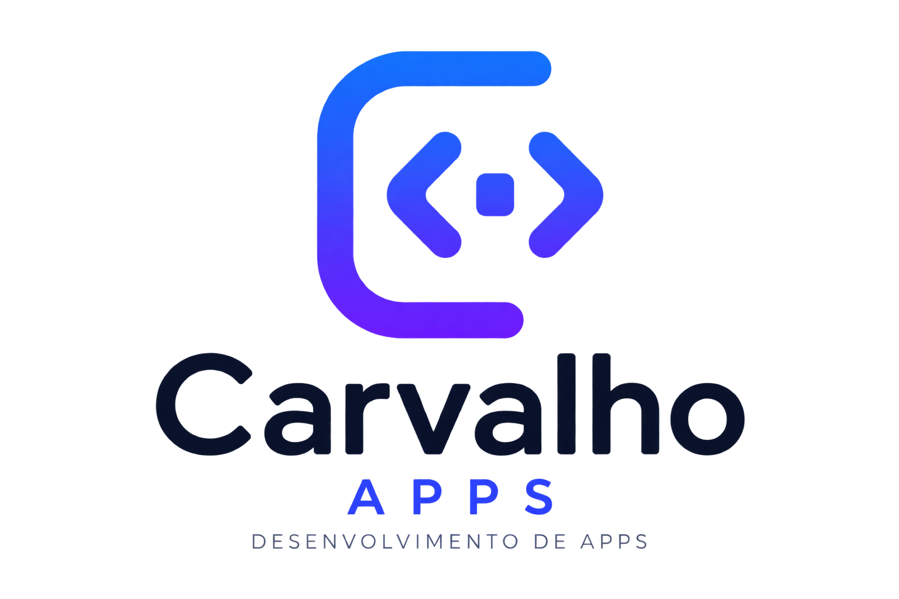

NoteStyle
v6.1.21O NoteStyle ajuda você a preparar notas e reuniões: formata textos com destaques, apoia a preparação de comentários, perguntas e esboços de discursos com a ajuda de IA e organiza as suas pesquisas e as notas do backup do JW Library.
🧰 O que você pode fazer
- Formatar textos com negrito, itálico, fontes, emojis, listas e modelos, com sugestões de uma IA se você quiser.
- Texto diário: ler, ouvir em voz alta e pedir comentários adicionais.
- Reuniões: preparar comentários (A Sentinela, Joias Espirituais e Estudo Bíblico de Congregação), perguntas para dirigir e esboços de discursos, com exportação para Word.
- Convidar alguém: o botão 📨 Convidar (na tela Início e em Ajustes) monta uma mensagem de convite pronta, para enviar pelo WhatsApp, compartilhar ou copiar.
- Pesquisas e respostas salvas: o que a IA preparou fica guardado só neste aparelho.
- Backup do JW Library: ver, editar e criar notas e respostas no arquivo de backup, que é processado só no seu aparelho.
📚 De onde vêm as informações
As matérias das reuniões — artigo de estudo de A Sentinela, apostila Vida e Ministério, Estudo Bíblico de Congregação, leitura da Bíblia da semana, texto diário e as pesquisas por artigos — são consultadas no site wol.jw.org (Biblioteca on-line), no momento em que você pede.
- A consulta é feita pelo servidor do NoteStyle, que lê a página, separa só o trecho pedido (por exemplo, os parágrafos escolhidos) e o entrega ao aplicativo e, quando você pede uma resposta, à IA.
- O NoteStyle não mantém uma biblioteca própria dessas publicações nem as republica: guarda, por pouco tempo, só o necessário para agilizar (como títulos e números de parágrafos).
- Os versículos e os verbetes do Estudo Perspicaz que aparecem nas respostas vêm de uma base de consulta de uso restrito do servidor, usada apenas para buscar o texto pedido.
- A IA só trabalha com o trecho que o servidor entrega a ela (e, em último caso, com páginas do próprio wol.jw.org).
🔒 Sua privacidade
- Nada é publicado. O NoteStyle não envia seus textos, notas, pesquisas ou backups para nenhum local público (redes sociais, fóruns, sites ou bancos de dados abertos).
- Sem conta, sem anúncios e sem rastreamento. Não pedimos nome, e-mail nem telefone e não usamos ferramentas de análise ou de publicidade.
- Seus dados ficam no aparelho: textos, preferências, modelos, pesquisas salvas e códigos de acesso. Eles somem se você limpar os dados do aplicativo ou do navegador.
- O backup do JW Library nunca sai do aparelho. O arquivo é aberto, editado e gerado aqui mesmo. Para mostrar títulos e perguntas, o aplicativo pede ao servidor apenas os números dos documentos.
- O que sai do aparelho é só o que você pede. Ao usar a IA ou a leitura em voz alta, o texto necessário é enviado, por conexão segura, ao servidor do NoteStyle e aos serviços que fazem o trabalho: Anthropic (IA — Claude) e Google (voz). O aplicativo pede a sua concordância antes do primeiro envio. Não envie dados pessoais nem sigilosos.
- Você controla os seus dados. Em Ajustes → Privacidade e dados deste aparelho você retira a concordância, relata um problema com uma resposta da IA (por e-mail, enviado só se você quiser) e apaga tudo o que o aplicativo guardou no aparelho.
Detalhes completos na Política de Privacidade.
🤖 Sobre as respostas da IA
As respostas da IA são sugestões de apoio ao seu estudo e podem conter erros ou imprecisões. Confira sempre nas publicações e na Bíblia antes de usar e adapte com as suas próprias palavras. O uso é por sua conta e responsabilidade. Se uma resposta vier errada, ofensiva ou inadequada, use o botão ⚠️ Relatar problema que aparece junto das respostas (ou em Ajustes → Privacidade e dados deste aparelho).
ℹ️ Aplicativo independente
O NoteStyle é um aplicativo independente, feito por um desenvolvedor particular. Não é um produto oficial e não tem vínculo, patrocínio ou aprovação da Watch Tower Bible and Tract Society of Pennsylvania, do site JW.ORG ou do aplicativo JW Library. Os nomes e os conteúdos dessas organizações pertencem aos seus proprietários e são consultados apenas para estudo pessoal.
⚠️ Limitações do uso de caracteres Unicode
O NoteStyle não aplica formatação real: ele troca as letras por caracteres Unicode parecidos com negrito, itálico, círculos, caixas e símbolos, para dar aparência de destaque em campos que aceitam apenas texto.
- Acentos e cedilha se perdem. Os caracteres de negrito, itálico e outros estilos não existem com acento, então á, ã, â, é, ê, í, ó, õ, ú, ü, ç viram a letra simples (por exemplo, “Jeová” fica “𝐉𝐞𝐨𝐯𝐚”).
- Não dá para voltar ao original. O botão Remover devolve letras comuns, mas sem os acentos que já foram perdidos. Guarde uma cópia do texto original antes de formatar.
- Algumas fontes são incompletas. Em estilos como Script ou Fraktur, letras e números que não têm versão estilizada continuam normais.
- O texto deixa de ser “texto comum”. Buscas, corretor ortográfico e leitores de tela podem não reconhecer as palavras formatadas, e alguns aparelhos ou aplicativos podem mostrar quadradinhos se não tiverem suporte aos caracteres.
- Pontuação, espaços e emojis não são alterados.
🧩 Créditos
Leitura e gravação do backup com as bibliotecas de código aberto JSZip e sql.js. A organização das notas do backup foi inspirada no JWLManager (licença MIT). Respostas de IA: Claude, da Anthropic. Leitura em voz alta: Google Cloud. Hospedagem: Vercel.
Desenvolvido por Carvalho Apps

Fernando S. Carvalho